Kąty środkowe i wpisane w okręgu
Kąt środkowy - to kąt, który ma wierzchołek w
środku okręgu, a ramionami są promienie okręgu. 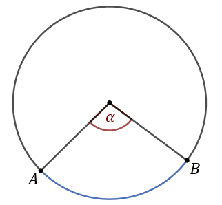
Kąt środkowy \(\alpha \) oparty na łuku \(AB\)
Kąt środkowy może mieć
wartość z przedziału \((0^\circ , 360^\circ )\). Oto przykład kąta środkowego wklęsłego: 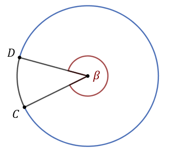
Kąt środkowy \(\beta \) oparty na łuku \(CD\)
Kąt wpisany - to kąt,
który ma wierzchołek na okręgu, a ramionami są cięciwy okręgu. 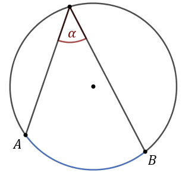
Kąt wpisany \(\alpha \) oparty na łuku \(AB\)
Kąt środkowy i wpisany oparty na tym samym łuku
Miara kąta środkowego jest \(2\) razy większa od miary kąta wpisanego opartego na tym samym łuku co kąt środkowy. 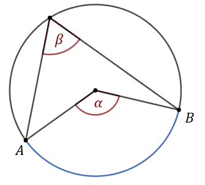Kąt środkowy \(\alpha \) jest oparty na tym samym łuku \(AB\) co kąt wpisany
\(\beta \). Zatem: \[\alpha =2\beta \]
Miara zaznaczonego na rysunku kąta \(\alpha \) jest równa 
A.\( 50^\circ \)
B.\( 60^\circ \)
C.\( 100^\circ \)
D.\( 130^\circ \)
A
Zaznaczony na rysunku kąt \(\alpha \) jest równy 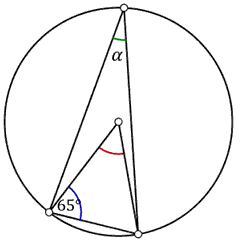
A.\( 25^\circ \)
B.\( 30^\circ \)
C.\( 35^\circ \)
D.\( 40^\circ \)
A
Punkty \(A, B, C\) leżące na okręgu o środku \(S\) są wierzchołkami trójkąta
równobocznego.  Miara zaznaczonego
na rysunku kąta środkowego \(ASB\) jest równa
Miara zaznaczonego
na rysunku kąta środkowego \(ASB\) jest równa
Miara zaznaczonego
na rysunku kąta środkowego \(ASB\) jest równa A.\( 120^\circ \)
B.\( 90^\circ \)
C.\( 60^\circ \)
D.\( 30^\circ \)
A
Zaznaczony na rysunku kąt \(\alpha \) jest równy 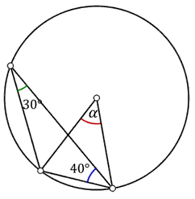
A.\( 50^\circ \)
B.\( 60^\circ \)
C.\( 70^\circ \)
D.\( 80^\circ \)
B
Punkty \(A\), \(B\) i \(C\) leżą na okręgu o środku \(S\) (zobacz rysunek). Miara
zaznaczonego kąta wpisanego \(ACB\) jest równa 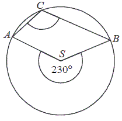
A.\( 65^\circ \)
B.\( 100^\circ \)
C.\( 115^\circ \)
D.\( 130^\circ \)
C
Punkt \(O\) jest środkiem okręgu. Kąt wpisany \(BAD\) ma miarę 
A.\( 150^\circ \)
B.\( 120^\circ \)
C.\( 115^\circ \)
D.\( 85^\circ \)
D
Na rysunku zaznaczono kąt środkowy okręgu o mierze \(250^\circ \) oraz kąt prosty
pod jakim przecinają się dwie cięciwy.  Zaznaczony kąt \(\alpha \) ma miarę
Zaznaczony kąt \(\alpha \) ma miarę
Zaznaczony kąt \(\alpha \) ma miarę A.\( 30^\circ \)
B.\( 35^\circ \)
C.\( 40^\circ \)
D.\( 45^\circ \)
B
Punkty \(A, B, C, D\) dzielą okrąg na \(4\) równe łuki. Miara zaznaczonego na
rysunku kąta wpisanego \(ACD\) jest równa 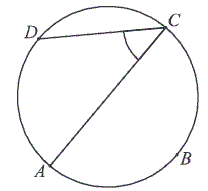
A.\( 90^\circ \)
B.\( 60^\circ \)
C.\( 45^\circ \)
D.\( 30^\circ \)
C
Kąt między cięciwą \( AB \) a styczną do okręgu w punkcie \( A \) ma miarę \(
\alpha =62^\circ \). Wówczas: 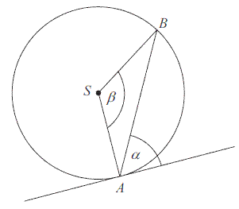
A.\(\beta =118^\circ \)
B.\(\beta =124^\circ \)
C.\(\beta =138^\circ \)
D.\(\beta =152^\circ \)
B
Kąt środkowy i kąt wpisany są oparte na tym samym łuku. Suma ich miar jest równa \(
180^\circ \). Jaka jest miara kąta środkowego?
A.\(60^\circ \)
B.\(90^\circ \)
C.\(120^\circ \)
D.\(135^\circ \)
C
Zaznaczony na rysunku kąt \(\alpha \) jest równy

A.\( 50^\circ \)
B.\( 40^\circ \)
C.\( 30^\circ \)
D.\( 10^\circ \)
A
Punkt \(O\) jest środkiem okręgu. Kąt wpisany \(\alpha \) ma miarę 
A.\( 80^\circ \)
B.\( 100^\circ \)
C.\( 110^\circ \)
D.\( 120^\circ \)
B
Punkty \(A, B, C, D, E, F, G, H, I, J\) dzielą okrąg o środku \(S\) na dziesięć
równych łuków. Oblicz miarę kąta wpisanego \(BGE\) zaznaczonego na rysunku. 
A.\( 54^\circ \)
B.\( 72^\circ \)
C.\( 60^\circ \)
D.\( 45^\circ \)
A
Punkty \(A\) i \(B\) leżą na okręgu o środku \(O\) i dzielą ten okrąg na dwa łuki,
których stosunek długości jest równy \(7:5\). Oblicz miarę kąta środkowego opartego na krótszym
łuku. 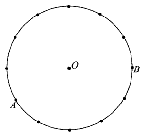
\(150^\circ \)
Punkt \(O\) jest środkiem okręgu o średnicy \(AB\) (tak
jak na rysunku). Kąt \(\alpha \) ma miarę 
A.\( 40^\circ \)
B.\( 50^\circ \)
C.\( 60^\circ \)
D.\( 80^\circ \)
B
Kąt środkowy oparty na łuku, którego długość jest równa \( \frac{4}{9} \) długości
okręgu, ma miarę
A.\(160^\circ \)
B.\(80^\circ \)
C.\(40^\circ \)
D.\(20^\circ \)
A
Punkty \( A \), \( B \) i \( C \) leżą na okręgu o środku \( O \) (zobacz rysunek).
Zaznaczony na rysunku wypukły kąt środkowy \( AOB \) ma miarę 
A.\(60^\circ \)
B.\(100^\circ \)
C.\(120^\circ \)
D.\(140^\circ \)
C
Punkt \(O\) jest środkiem okręgu. Kąt \(\alpha\), zaznaczony na rysunku, ma miarę

A.\( 50^\circ \)
B.\( 45^\circ \)
C.\( 25^\circ \)
D.\( 20^\circ \)
C
Na okręgu o środku \( S \) leżą punkty \( A, B, C \text{ i } D \). Odcinek \( AB \)
jest średnicą tego okręgu. Kąt między tą średnicą a cięciwą \( AC \) jest równy \( 21^\circ \)
(zobacz rysunek).  Kąt \( \alpha \)
między cięciwami \( AD \) i \( CD \) jest równy
Kąt \( \alpha \)
między cięciwami \( AD \) i \( CD \) jest równy
Kąt \( \alpha \)
między cięciwami \( AD \) i \( CD \) jest równy A.\( 21^\circ \)
B.\( 42^\circ \)
C.\( 48^\circ \)
D.\( 69^\circ \)
D
Kąt \(ASB\) jest kątem środkowym w okręgu i jego miara wynosi \(100^\circ \). Miara
zaznaczonego kąta \(\alpha \) jest równa 
A.\( 40^\circ \)
B.\( 45^\circ \)
C.\( 50^\circ \)
D.\( 60^\circ \)
A
Miara kąta wpisanego w okrąg jest o \(20^\circ \) mniejsza od miary kąta środkowego
opartego na tym samym łuku. Wynika stąd, że miara kąta wpisanego jest równa
A.\( 30^\circ \)
B.\( 20^\circ \)
C.\( 10^\circ \)
D.\( 5^\circ \)
B
W okręgu o środku \(O\) dany jest kąt o mierze \(50^\circ \), zaznaczony na
rysunku.  Miara kąta oznaczonego na
rysunku literą \(\alpha \) jest równa
Miara kąta oznaczonego na
rysunku literą \(\alpha \) jest równa
Miara kąta oznaczonego na
rysunku literą \(\alpha \) jest równa A.\( 40^\circ \)
B.\( 50^\circ \)
C.\( 20^\circ \)
D.\( 25^\circ \)
A
Punkty \(B\), \(C\) i \(D\) leżą na okręgu o środku \(S\) i promieniu \(r\). Punkt
\(A\) jest punktem wspólnym prostych \(BC\) i \(SD\), a odcinki i są równej długości. Miara kąta
\(BCS\) jest równa \(34^\circ \)(zobacz rysunek). 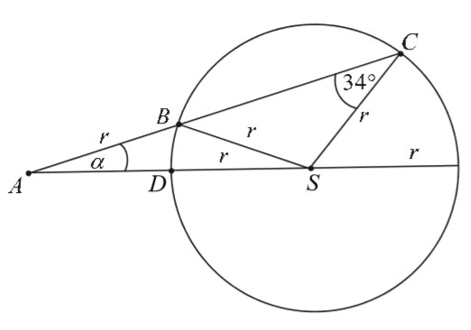 Wtedy
A.\( \alpha =12^\circ \)
B.\( \alpha =17^\circ \)
C.\( \alpha =22^\circ \)
D.\( \alpha =34^\circ \)
Na okręgu o środku w punkcie \(O\) wybrano trzy punkty \(A\), \(B\), \(C\) tak, że,
\(|\sphericalangle AOB|=70^\circ \), \(|\sphericalangle OAC|=25^\circ \). Cięciwa \(AC\) przecina
promień \(OB\) (zobacz rysunek). Wtedy miara \(\sphericalangle OBC\) jest równa 
A.\( \alpha =25^\circ \)
B.\( \alpha =60^\circ \)
C.\( \alpha =70^\circ \)
D.\( \alpha =85^\circ \)